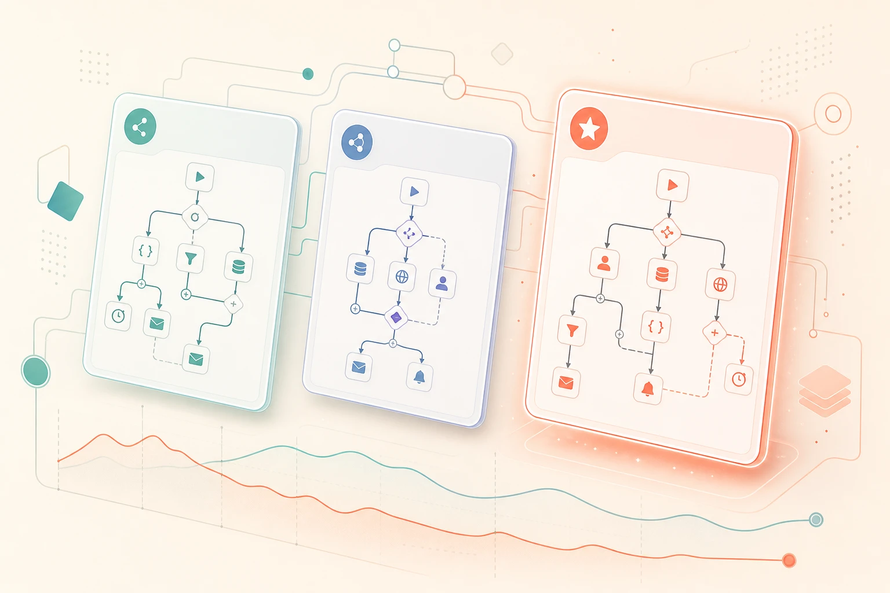

The real difference between these three tools isn't features. It's how each one bills you once your automation actually gets busy — and that gap gets wide, fast.

All three tools will automate your workflow. All three have visual builders, app integrations, and free tiers that feel generous until you start using them properly. The moment things get real — when a workflow runs hundreds or thousands of times a month — the difference in how they count usage becomes the only thing that actually matters.
Most comparisons bury that. This one starts with it.
Before picking a tool, ask: how does this platform count a "unit" of work? That answer determines your bill more than any other feature on the comparison chart.
Every individual action inside a workflow counts as a separate task. Run a 10-step Zap a thousand times in a month and that's 10,000 tasks — not 1,000. Zapier has the easiest learning curve and the biggest app library, but it's the most expensive option at any meaningful volume.
Similar counting logic to Zapier — each step is an operation — but the pricing tiers are structured to give you more for less. At equivalent volume, Make typically runs roughly 60% cheaper than Zapier. The canvas is built for branching logic and is genuinely good at visual complexity.
The entire workflow counts as one unit, regardless of how many nodes are inside it. That same 10-step workflow running 10,000 times a month can cost 80–90% less than Zapier at equivalent volume. It's open-source, self-hostable, and the only one of the three genuinely built for AI agents with memory across runs.
| Factor | Zapier | Make | n8n |
|---|---|---|---|
| Billing unit | Per task (each step) | Per operation (each step) | Per execution (whole workflow) |
| Relative cost at scale | Highest | ~60% less than Zapier | 80–90% less than Zapier |
| Learning curve | Easiest | Moderate | More technical |
| App library | Largest | Very large | Growing; extensible via code |
| Visual builder | Linear steps | Canvas with branching | Node canvas with branching |
| Self-hostable | No | No | Yes (open-source) |
| AI agent support | Basic | Moderate | Native, with memory across runs |
Three clear scenarios. Most people fit cleanly into one of them:
A concrete example makes the billing difference tangible. Take a lead-capture workflow: form submission triggers scoring, enrichment, a CRM push, and a Slack notification — call it 10 steps. It runs 1,000 times a month.
Zapier → 10,000 tasks (10 steps × 1,000 runs) Make → 10,000 ops (same counting, lower price per unit) n8n → 1,000 executions (1 execution × 1,000 runs) At 10,000 runs/month: Zapier → 100,000 tasks → expensive paid tier Make → 100,000 ops → ~60% less than Zapier n8n → 10,000 exec → 80–90% less than Zapier
The gap only grows as volume increases. A workflow that runs 10x more often costs 10x more on Zapier and Make — it costs almost nothing extra on n8n cloud, and literally nothing extra if you're self-hosting.
If you're already running automations and want an honest look at whether your current tool is the right one for your volume and use case, that's exactly the kind of thing a short call is useful for.
Follow @itsriz for AI tips every single day.